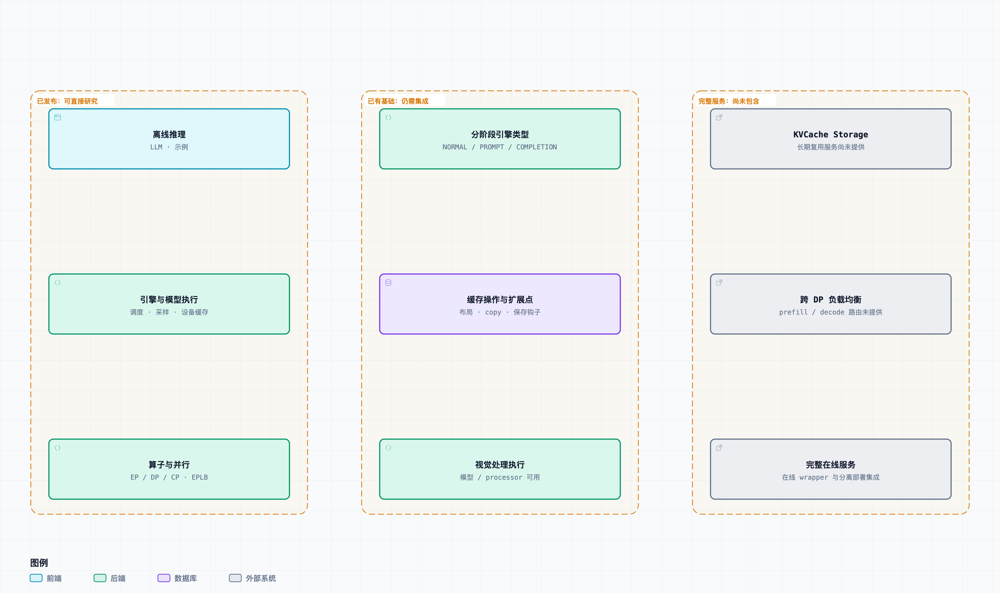

03 / DEEPINFER ATLAS
开源边界
区分已发布的引擎、待集成的能力和官方完整生产系统中的服务。
先把版本固定下来
本页讨论上游 774ce244b87cc0eb8d4b94ab9f5de2ab22049f01，核对日期为 。官方把此次发布定位为提供核心能力的离线推理。下列“未包含”结论只适用于这个分析版本，不能外推到后续发布。


已经发布：引擎内可研究的实现
- 离线批量推理
- LLM 入口、示例、C++ Scheduler、Worker / ModelRunner，以及模型执行和采样。当前官方支持模型为 DeepSeek-V4.1-Flash；硬件支持表列出 NVIDIA SM100 与 Huawei Ascend 950。
- 引擎性能能力
- 异步调度、DSpark / confidence-scheduled verification、SWA bounded replay、Attention DP / balanced CP、MoE EP + EPLB 等。EPLB 是专家并行中的负载平衡，不应与跨 DP 副本的请求路由混为一谈。每项能力都有配置与硬件条件，支持不代表全部默认开启。
- 设备缓存与块管理
- CacheEngine 创建运行时 KV / state 张量，BlockManager 和 Scheduler 协调块的使用与回收。它们是本次推理运行时的一部分，确实已经存在。
- 采样与输出约束
- 模型和 Sampler 运行时，以及 regex、JSON schema、EBNF 等结构化输出。官方注明 batch-invariant 与确定性采样的 NVIDIA 条件；本图谱不把这些条件扩展为跨硬件承诺。
已有基础：仍需系统集成
EngineType 包含 NORMAL、PROMPT、COMPLETION。引擎保留 init_pd_split()、do_save_kvcache() 等扩展钩子，缓存实现也提供布局与状态操作基础。官方说明分离部署的大部分引擎能力已经实现；这些证据支持“有集成基础”，并不证明当前仓库提供了完整的远程传输、发现和部署控制面。
EngineType.default_zero_overhead_scheduling 源码 E34LLMEngine 分阶段与缓存钩子 源码 E12CacheEngine.do_allocate_kv_cache 官方文档 D02官方发布范围仓库包含视觉模型与 processor 的执行代码，因此不能把“VE/Prefill/Decode 分离部署未提供”理解为“没有任何视觉执行”。VE 指 Vision Encoder（视觉编码器）；把它做成可独立扩缩容的服务还涉及任务路由、结果传输与服务管理，超出离线示例的交付范围。
本段后半的服务集成项是解释性分解，不是对未公开实现的推测。图中所有已发布模块可在执行与资源阅读路线找到入口。
完整服务：官方明确未包含的部分
| 组成 | 为何不能从引擎代码推出已经交付 |
|---|---|
| 完整 KV cache system | README 明确列为未包含；Q&A 将长期上下文复用和缓存管理放在整体生产系统中，且说明其依赖内部基础设施。 |
| VE / Prefill / Decode 分离部署 | 存在引擎类型和扩展点，仍需要把阶段组织成服务并完成集成。 |
| 跨 DP 副本负载均衡 | prefill / decode 请求路由没有随此次发布交付；EPLB 和 rank 通信解决的是另一层问题。 |
| 在线 serving wrapper | LLMEngine 的类说明明确表示此次发布不包括 online-serving wrapper；离线 generate 不是 HTTP API 服务。 |
在线 wrapper 的直接源码说明见 LLMEngine 类说明。鉴权、计费、配额、监控和容灾也是读者构建线上产品时可能需要的工程工作；这是本图谱的通用集成提醒，不能当作对 DeepSeek 内部部署结构的断言。
为什么“有 KV cache”和“缺缓存系统”同时成立
01 / 设备执行
当前步怎样读写
CacheEngine 的设备张量、SWA 状态和块布局供模型计算使用。BlockManager 跟踪哪些块仍被占用。
02 / 跨请求复用
怎样长期保留与命中
官方生产系统讨论长时间保留和上下文复用，需要更完整的 KVCache Storage 与管理能力。
03 / 服务路由
谁来接下一个请求
请求在 prefill / decode 副本之间的分配属于跨 DP 负载均衡，不是块分配，也不是 MoE 专家平衡。
这三层分别回答“计算时存在哪里”“算过的结果怎样复用”“流量交给谁”。第一层的代码不能作为后二层已开源的证据。官方文档中的长期保留目标是生产系统描述，本项目没有复测其保留时长、命中率或吞吐。